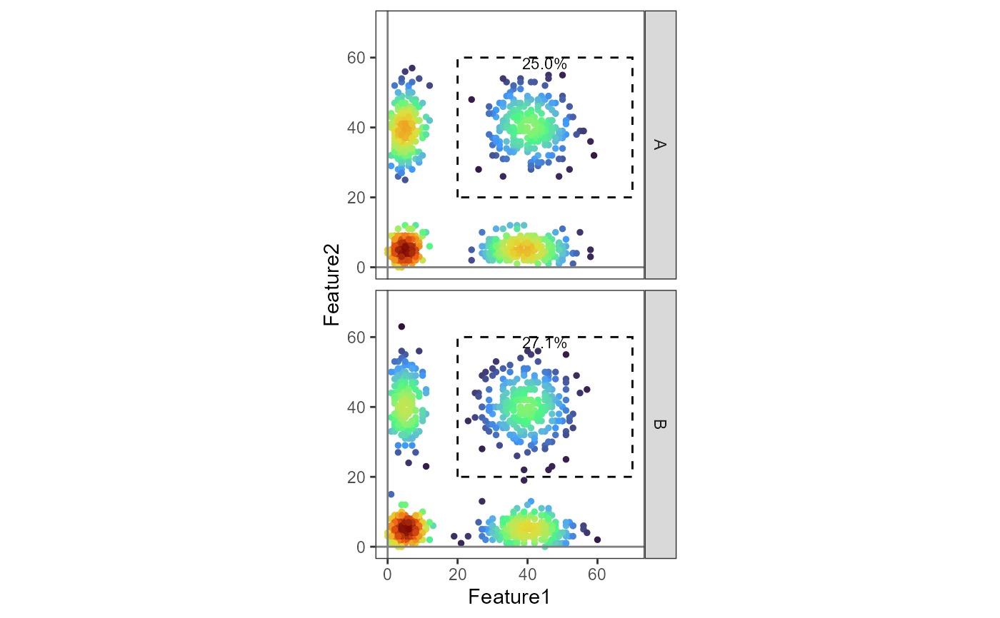
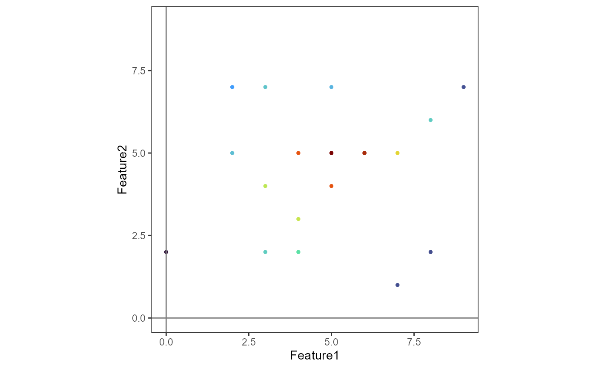
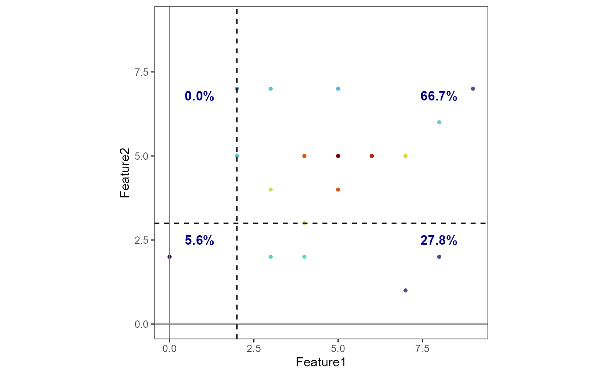

Create a density scatter / pseudocolor plot.
DensityScatterPlot.RdCreate a density scatter plot, also known as a pseudocolor plot, of two markers from a Seurat object. The points in the scatter plot are colored by the point density, determined by 2D kernel density estimation. Optionally, the plot can be faceted by one or two variables and a gate can be plotted.
Usage
DensityScatterPlot(
object,
marker1,
marker2,
facet_vars = NULL,
plot_gate = NULL,
gate_type = c("rectangle", "quadrant"),
grid_n = 500,
scale_density = TRUE,
margin_density = FALSE,
pt_size = 1,
alpha = 1,
layer = NULL,
coord_fixed = TRUE,
equal_axes = TRUE,
colors = NULL,
annotation_params = NULL,
...
)Arguments
- object
A Seurat object.
- marker1
Name of first marker to plot.
- marker2
Name of second marker to plot.
- facet_vars
Optional character vector of length 1 or 2 specifying variables to facet by.
- plot_gate
Optional data frame containing gate parameters. For
gate_type = "rectangle", must contain columns 'xmin', 'xmax', 'ymin', 'ymax' defining the rectangular gate boundaries. For gate_type = "quadrant", must contain columns 'x' and 'y' defining the position of the quadrant lines. The data frame can also contain the variables specified in 'facet_vars' to plot different gates in different facets.- gate_type
Optional string specifying the gate type. Must be either "rectangle" or "quadrant". Required if
plot_gateis provided.- grid_n
Number of grid points in each direction to compute density.
- scale_density
Whether to scale the density within each facet.
- margin_density
Whether to plot density plots in the margins.
- pt_size
Point size.
- alpha
Point transparency.
- layer
Optional string specifying a layer to plot.
- coord_fixed
Whether to use fixed coordinate ratio.
- equal_axes
Whether to use equal axes scaling. If
TRUE(default), the x and y axes will have the same scale.- colors
Optional character vector of colors to use for the color scale.
- annotation_params
Optional list of parameters to pass to
geom_textfor gate annotations. Common parameters include color (text color), vjust (vertical justification), hjust (horizontal justification), and size (text size).- ...
Additional arguments to pass to
MASS::kde2d.
Examples
library(pixelatorR)
library(Seurat)
#>
#> Attaching package: 'Seurat'
#> The following object is masked from 'package:igraph':
#>
#> components
set.seed(123)
# A mock-up Seurat Object
object <-
CreateSeuratObject(counts = matrix(
c(
rpois(100000, 40),
rpois(100000, 5)
)[sample(1:200000, 200000)],
nrow = 100, ncol = 2000,
dimnames = list(
paste0("Feature", 1:100),
paste0("Cell", 1:2000)
)
))
#> Warning: Data is of class matrix. Coercing to dgCMatrix.
object <-
AddMetaData(object,
metadata = data.frame(
sample = rep(c("A", "B"), each = 1000),
sample_type = rep(c("Unstimulated", "Stimulated"),
each = 500, times = 2
),
row.names = paste0("Cell", 1:2000)
)
)
plot_gate <-
data.frame(
xmin = c(20, 20),
xmax = c(70, 70),
ymin = c(20, 20),
ymax = c(60, 60),
sample = c("A", "B")
)
DensityScatterPlot(object,
marker1 = "Feature1",
marker2 = "Feature2",
facet_vars = "sample",
plot_gate = plot_gate,
gate_type = "rectangle",
layer = "counts"
)

# Create a Seurat object with random data
counts <- matrix(rpois(200, 5), nrow = 10)
rownames(counts) <- paste0("Feature", 1:10)
colnames(counts) <- paste0("Cell", 1:20)
object <- CreateSeuratObject(counts = counts)
#> Warning: Data is of class matrix. Coercing to dgCMatrix.
# Create a basic density scatter plot
DensityScatterPlot(
object,
marker1 = "Feature1",
marker2 = "Feature2",
layer = "counts"
)

# Create a density scatter plot with a quadrant gate
# Define quadrant gate parameters
quad_gate <- data.frame(
x = 2, # x-coordinate for vertical line
y = 3 # y-coordinate for horizontal line
)
# Plot with quadrant gate and custom annotations
DensityScatterPlot(
object,
marker1 = "Feature1",
marker2 = "Feature2",
plot_gate = quad_gate,
gate_type = "quadrant",
annotation_params = list(
color = "darkblue",
size = 4,
fontface = "bold"
),
layer = "counts"
)
#> Adding missing grouping variables: `quadrant`
#> Adding missing grouping variables: `quadrant`, `x`
